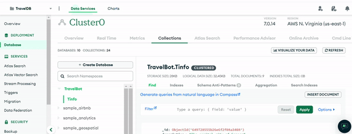

Feature Demonstrations
Hero Section
The video opens with a captivating decode text animation revealing "GlobalGuideAI," followed by a typewriter effect showing the
tagline "Discover the World's Hidden Treasures." A prominent "Try it out" button invites users to engage, setting an interactive
tone for exploring the site’s features.
Introducing GlobalGuideAI: What, How, and Why
The next section highlights three info boxes explaining what GlobalGuideAI is, how it works, and why it's beneficial. Each box
features an icon, brief text, and a hover animation to boost interactivity and user engagement, clearly conveying the platform’s value.
Chatbot Interaction
The chatbot interaction video showcases GlobalGuideAI's use of natural language processing to handle various user inputs, even vague
or uncertain ones. The chatbot smoothly guides the conversation, offering personalized travel recommendations and linking directly to
relevant resources. This interaction highlights the project's focus on user engagement, showing how effectively the chatbot provides
tailored travel information, making exploration simple and intuitive.
MongoDB Integration Overview
MongoDB serves as the core database for GlobalGuideAI, storing comprehensive travel information for various cities.
- Collections: The primary collection is Tinfo, which holds documents for each city.
- Documents: Each document contains fields such as:
- City: Name of the city.
- Hotels, Restaurants, Attractions, Shopping: Lists of top places in each category.
- Hotel Links, Restaurant Links, Attraction Links, Shopping Links: URLs providing more information about specific places.
Data Retrieval and Dynamic Content
- The Flask application uses the pymongo library to query MongoDB based on user input.
- When a user mentions a city or requests information about a specific category, the application retrieves the relevant data from the database.
- Responses are dynamically generated using the retrieved data, ensuring up-to-date and accurate information is provided to the user.
Data Structuring and Management
MongoDB Atlas manages the TravelBot database, with a focus on the **Tinfo** collection, which organizes city data such as hotels, restaurants,
attractions, and shopping. This structure enables efficient retrieval of relevant information, supporting the application’s ability to deliver
real-time, personalized travel recommendations. The well-organized database is essential to the smooth functionality of the entire system.

Code Highlights
Advanced Natural Language Understanding with spaCy
Code Snippet: nlp_processing.py (from main.py)
Challenge:
The chatbot needed to handle diverse user inputs, including casual conversation, specific queries, and contextual follow-ups, while managing synonyms, typos, and language variations.
Solution:
- Used spaCy for tokenization, lemmatization, and part-of-speech tagging to parse inputs.
- Extracted lemmas of tokens to match against keywords, improving accuracy with different word forms.
- Maintained conversation context with session variables to handle follow-up questions.
Reflection:
Demonstrated advanced NLP skills, overcoming the limitations of simple keyword matching, and enhancing the chatbot's ability to handle varied inputs for a better user experience.
Efficient Data Retrieval and Dynamic Response Generation from MongoDB
Code Snippet: data_retrieval.py (from main.py)
Challenge: Retrieve and present specific information from MongoDB based on nuanced user queries while ensuring performance and scalability.
Solution:
- Optimized Database Schema: Structured MongoDB documents for efficient querying, with indexes on frequently searched fields.
- Dynamic Query Building: Built functions to dynamically generate queries based on user input, minimizing database load.
- Response Personalization: Used data directly fetched from the database to create personalized, accurate responses.
Reflection: Demonstrated skills in advanced database querying and efficient code structuring. Successfully handled dynamic user requests without
compromising performance, improving chatbot responsiveness and accuracy.
State Management and Context Preservation Across User Sessions
Code Snippet: session_management.py (from main.py)
Challenge: Maintain conversation context across multiple user inputs to provide coherent responses, while managing stateless HTTP requests in a web application.
Solution:
- Flask's Session Management: Used Flask’s session object to store user-specific data across multiple requests.
- Chat History System: Stored user and chatbot messages to reference previous interactions and maintain conversation flow.
- Thread Safety: Ensured session data was managed properly to prevent data leakage between users.
Reflection: Demonstrated effective session management in a web application. Overcame the challenge of preserving conversational context, enhancing the chatbot's coherence and user experience.
Conclusion
GlobalGuideAI successfully redefines travel planning by integrating cutting-edge
AI technology with a user-focused design. Through advanced natural language processing
with spaCy, efficient data management via MongoDB, and seamless front-end and back-end
communication, the platform delivers a highly personalized and intuitive travel experience.
The project tackled complex challenges like dynamic data retrieval, contextual understanding
across sessions, and optimized system performance, ensuring users receive relevant and timely
travel recommendations. By employing Agile methodologies and a user-centric development process,
GlobalGuideAI was iteratively refined to meet user needs with precision.
This project highlights expertise in full-stack development, natural language processing, AI-driven
functionality, and scalable database management. With its adaptable architecture and robust feature
set, GlobalGuideAI serves as a powerful example of how modern technologies can transform user engagement
and simplify complex tasks like travel planning.